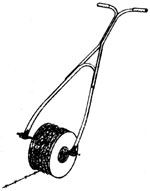

"Stringing a barbed wire fence is hard work," writes Jackie Ivey, a MOTHER-reader from Bebe, Texas (a state that can boast more than a few miles of "bob wahr"). But the only part of the job that really bothered Jackie and David (the other half of the Ivey fencing team) was unrolling the spools of prickly wire. Consequently, they put on their thinking caps and came up with a way to unspool the material without having to handle it. According to Jackie . . .
"The fastest and easiest way we've found to unroll barbed wire is with the aid of a homebuilt 'fence reel.' Such a reel can be made from the handle of just about any type of discarded lawn mower. Simply cut a piece of metal pipe a little longer than the width between the forks of the handle, then slip the pipe through the forks, with the spool of wire riding on the pipe in between. To keep the pipe in place, you can either thread the ends for nuts, or drill small holes for cotter pins.
"With this rig, the spool of wire serves as a wheel (albeit a somewhat wobbly one), allowing you either to push or pull your fence reel along the ground between posts."
Garnett, Kansas, reader Ralph Adams writes that he noticed the Country Lore hints in MOTHER NOS. 89 and 91 for keeping chickens from pecking at each other and was reminded of a similar situation he encountered while employed by the Ohio Division of Wildlife.
"The state was raising pheasants in close quarters, and the birds took up the harmful habit of pecking at each others' eyes. After experimenting with different techniques, the pecking problem was finally corrected by placing marbles in the pheasants' feed. The reflection of the glass balls caught their attention, and from then on the beautiful birds pecked at the marbles instead of at their roommates' eyes. I can't see any reason why this trick wouldn't work equally well with chickens."
Clinton Cottrell, a paramedic based in Pittsburgh, Pennsylvania, has a life-or-death message for those of us who live in outlying areas:
"As a paramedic working in a rural area, I've noticed that people who live along way from the nearest medical help go to great lengths to protect themselves and their loved ones. They stock up on emergency medical supplies, take CPR (cardiopulmonary resuscitation) courses, memorize emergency-aid numbers, and volunteer for local ambulance and fire departments.
But too many of these rural folk seem to overlook one of the most important preparations of all: If the emergency personnel can't find your home, they can't help you. No matter how carefully you relay directions, they'll have a heck of a time finding your home if your address isn't clearly displayed on the road in front of your home.
"Here's how to remedy this dangerous oversight: If you have a curb, paint one of the blocks white from top to bottom, making sure it's wide enough to accept your address without your having to use letters that are too small to read from a distance. Now purchase a stencil at the dime store (or cut out your own), and paint your address over the white block, using black paint to make letters at least I three inches high and two I inches wide. If you don't have a curb, use the same technique to mark your address (or name, or some other clear identifier) on both sides of your mailbox.
"This way, when trouble strikes and you're unable to meet the emergency personnel at the street, there's no chance they'll be dangerously delayed while trying to locate your home."
"If you need to install a new timing chain and gear in your car or truck and can't get the nut off the crankshaft because the engine keeps turning over, here's a hint to get you back on the road again: Place a socket with a long, heavy breaker-bar handle on the crankshaft nut, positioning the handle just above the floor or ground. Now climb in and hit the starter once or twice, and it will spin the nut right off for you."
That toolbox lore comes to us from Potter, Wisconsin, mechanic Otto Maas . . . and we'd add a caution: Make sure nobody is nearby before you hit that starter switch!
Through the years we've all probably discovered a few practical, down-home, time-tested solutions to the frustrating little problems of everyday life. Why not share your best "horse sense" with the rest of MOTHER'S readers? Send your suggestions to Country Lore, THE Mother Earth News, 105 Stoney Mountain Rd., Hendersonville, NC 28791. A one-year subscription-or a one-year extension of an existing subscription-will then be sent to each contributor whose tip is printed in this column.-MOTHER.
|
 |
|
|